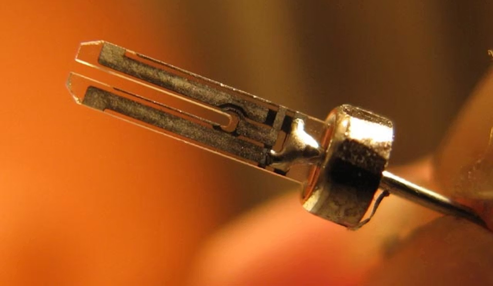

Portföy — 2026
Bilgisayar Teknolojileri öğrencisi. Elektronik & dijital ürün geliştirme, sistem tasarımı ve Ar-Ge alanlarında ilerlemeyi hedefliyorum.

Yıllar süren bilişim eğitimi ve teknoloji odaklı çalışmalarım doğrultusunda Ar-Ge, teknoloji ve ürün geliştirme ile sistem tasarımı alanlarında ilerlemeyi hedefliyorum. 2D Tasarım, 3D Tasarım, Afiş, Logo, Pixelart, Görsel ve Video Düzenleme, Sosyal Medya Yönetimi gibi alanlardaki deneyimlerimi elektronik ve dijital projelerin geliştirilmesi ve tanıtılması sürecinde destekleyici bir yetkinlik olarak kullanıyorum. Hem elektronik ve dijital ürün tasarlayıp pazarlayarak hem de teknolojik gelişmeler için çalışarak potansiyelimi kullanmak istiyorum.
Arduino Uno ile RFID Okuyucu, Gaz Sensörü, Alev Sensörleri, Park Sensörü ve otomatik far yakma için Işık Sensörü donanımlı itfaiye aracı projesi.
GitHub'da İncele →Direksiyon kursu eğitmenleri ve öğrencileri arasında randevu planlamasını kolaylaştırmak için geliştirilen web uygulaması.
GitHub'da İncele →İnsanların duygu durum analizini takip eden ve istatistikler çıkaran mental durum takibi AI prototipi.
Web Sayfasına Git →ESP32'nin sınırlarını zorlayarak mini oyunlar oynatan, tamamen özel tasarlanmış el konsolu.
GitHub'da İncele →Otomatik Balık ve Tavuk Yemliği Prototipleri. ESP32 tabanlı, zamanlanmış ve sensör destekli otomasyon sistemi.
GitHub'da İncele →Güncel sınır karakollarını teknolojik donanımlarla donatma projesinin Arduino elektronik başlangıç seviyesi prototipi.
Yakında GitHub'daYapay zekâ destekli otonom tarım ve topraksız üretim optimizasyon platformu.
GitHub'da İncele →Mentörler ve Danışanları bir araya getirip eğitim ve randevu yönetimi sağlayan platform.
GitHub'da yer almamaktaGüvenlik görevlilerine telsiz teslim etme/teslim alma takibi ve kayıt sistemi.
GitHub'da yer almamaktaBelirlenen konularda, istenen dilde, istenen zorlukta oyun oynayarak öğrenme amaçlı web sitesi.
GitHub'da İncele →Proje, Depolama, Kayıt, Dosya yükleme, Yapışkan notlar, Özelleştirilebilen arayüz ve bunların yönetimi için kullanılabilen AI Asistan gibi özelliklere sahip web sitesi.
GitHub'da İncele →Neyi, hangi projede kullandığım
İtfaiye Aracı, El Konsolu, YEMGO ve Kalekol (Radar) projelerinde donanım tasarımı ve gömülü yazılım geliştirmede kullandım.
Direksiyon Kursu Web Sitesi, bu portfolyo sitesi ve Mindeal'ın veri/analiz kısmında kullandım.
Proje tanıtım görselleri, afiş ve sosyal medya içeriklerini bunlarla üretiyorum.